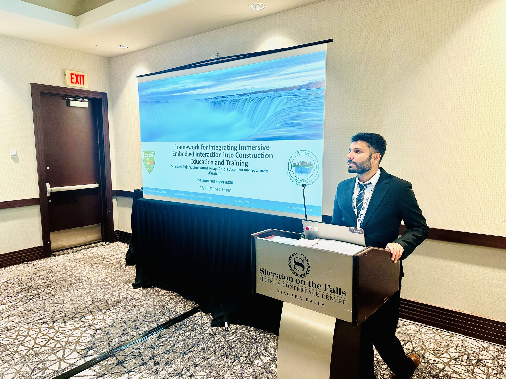
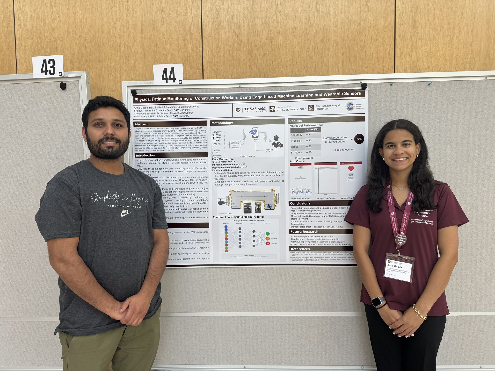
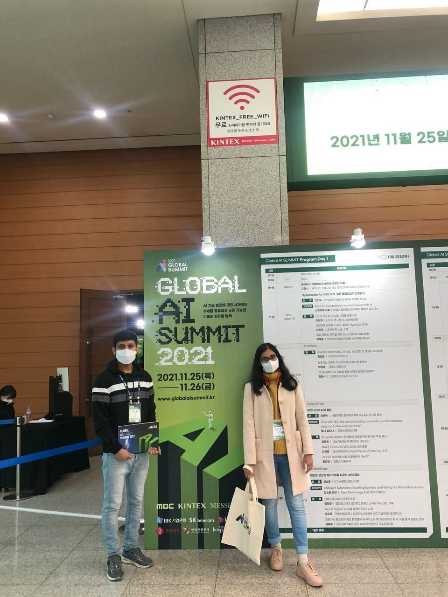
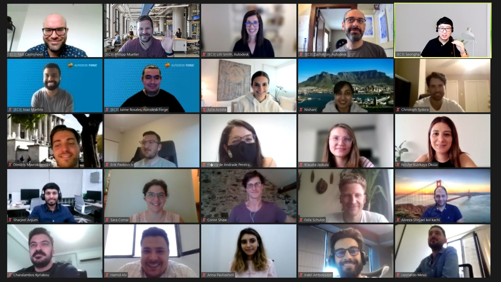

Graduate Hagler FellowCurrent
Jan 2026 – Present
Researching machine learning for physiological data to enable personalized fatigue monitoring in safety-critical and occupational settings, funded by the Department of Defense.

I'm a third-year PhD student at Texas A&M University, currently conducting research as a Graduate Hagler Fellow. My work focuses on machine learning for physiological data, with an emphasis on personalized fatigue monitoring in safety-critical settings — research supported by both the U.S. Department of Defense and the National Science Foundation.
Before the fellowship, I built adversarial ML algorithms at the SIIR Lab, developed anomaly detection systems at IvWorks (South Korea), and designed worker safety monitoring systems at Construction Technology Innovation Research Lab (CONTIL). My broader interests sit at the intersection of adversarial machine learning, real-world automation, and worker safety.
Alongside research, I mentor undergraduate students through their first conference publications and lead deep learning workshops as a Senior Data Science Ambassador at TAMIDS.
Researching machine learning for physiological data to enable personalized fatigue monitoring in safety-critical and occupational settings, funded by the Department of Defense.
Promoted from Data Science Ambassador to lead deep learning workshops and mentor participants in dataset preparation, model development, and applied problem-solving.
Delivered deep learning workshops on neural network techniques and mentored participants in dataset preparation and model development.
Developed ML solutions for identifying anomalies in semiconductor manufacturing using time series analysis and computer vision.
Designed and deployed ML/DL models for construction worker safety monitoring using embedded computer vision systems.
Taught computer science curriculum and lab courses to middle school students.
Federally funded and international projects spanning fatigue monitoring, embodied interaction, and industrial safety.
Developed machine learning algorithms for personalized fatigue monitoring from physiological sensor data, aimed at improving health and safety outcomes in demanding operational environments.
Built a Unity (C#) VR data-sensing experience introducing K–12 students to data sensing technologies, and contributed to a companion research thread on embodied interaction for construction site inspection using drones — presented at the CSCE Conference in Niagara Falls, Canada.
Combined time series analysis and computer vision to detect anomalies in semiconductor manufacturing, catching defects earlier in production.
Deployed embedded computer vision and deep learning models for fall prevention on ladders and scaffolds, later published in IEEE Access and the Journal of Construction Engineering and Management.
Building robust models that withstand adversarial attacks in safety-critical deployments.
Translating ML research into deployed systems for industrial and construction contexts.
Computer vision and IoT-based systems for fall prevention and hazard detection.
Personalized physiological monitoring to detect and predict muscle and cognitive fatigue.
Undergraduate researchers mentored through their first conference publications, as part of NSF funded research programs.

Talk on embodied interaction, funded by NSF, at the CSCE Conference in Niagara Falls, Canada — on leveraging embodied interaction for construction site inspection using drones.

A mentee, supported under the NSF REU program, presented a poster on deploying an ML model on an edge device for physical fatigue monitoring.

A four-day session introducing students at Caldwell High School, Texas, to data sensing technologies in VR.

Attended the Global AI Summit at KINTEX, South Korea.

Attended the European Council on Computing in Construction in 2021 to explore AI applications in construction.
.png)
Moments from life and research at Texas A&M University.